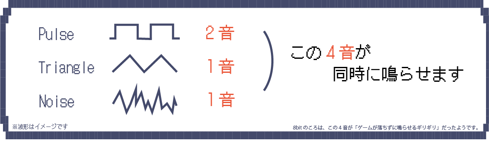

「これからDTM（デスクトップミュージック）に挑戦したい！」
「オリジナルのゲーム音楽を作れるようになりたい！」
そんな人に向けて、このサイトでは8bit風音楽のつくりかたを紹介します。
ここで紹介するほかにも音楽をつくるときに知るべきことはたくさんありますが
まずは1曲つくって周りに自慢することからはじめてみませんか。
それではさっそくスタートです！

準備編

パソコン・DAW（音楽制作ソフト）を用意してください。
好きなアーティストが使っているものなどで大丈夫です。
ここで「プラグイン」が入れられるDAWかどうか確認を忘れずにしてください！
プラグイン
DAWに付属している音源とエフェクトだけでなく、追加で自分の欲しい機能のあるものを入れられる。

ソフトに入っていない音も使えるように、
「ソフト音源のプラグイン」を入れてみましょう。
「DTM 8bit plugin」で調べて気になったプラグインを入れてみてください。
ソフトごとに入れ方は違うのでわからないときは調べてみましょう！
じぶんで きょくをつくる かくごは できているか？
はい
いいえ

8bit風音楽で使う音
この4音で作ると8bit音楽「らしく」なりますが、最初は無理にそれに縛られる必要はありません！
これらの音を「ピアノロール」に打ち込むことで曲にすることができます！
音の打ち込み
下地になるコード
低い音に入れてください

ファ ソ ミ ラ

ラ ファ ド ソ
メロディに使う音
高い音に入れてください

03
ノイズでリズムを作る
短いノイズでリズムを刻むことが、ロックバンドのドラムの代わりになります。
Tips
同じリズムを繰り返してみたり、同じ音を違う音色にするとまとまりが出ることがあります！
なにか違うな、と思ったらリズムと音色を意識してみてください。
全ての打ち込みが終わったら、「書き出し」をしてみましょう！！
完成！！
できたオリジナル曲を自慢してみましょう！

これで作り方の流れはつかむことができたと思います。 これからはいろいろな曲を作ってみてくださいね！ 楽しいDTMライフを！